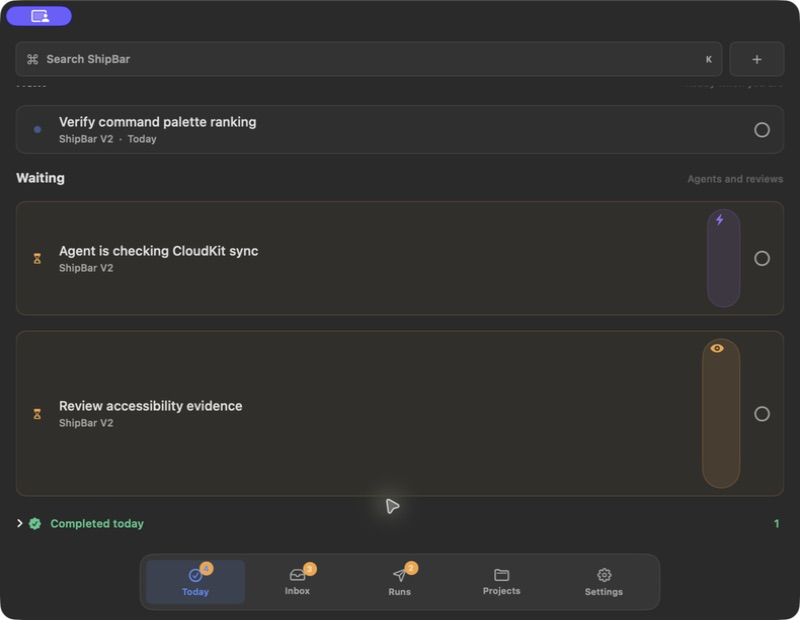
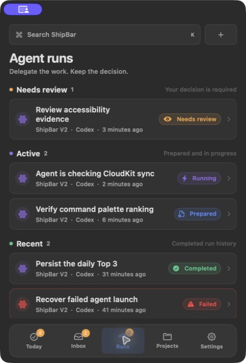
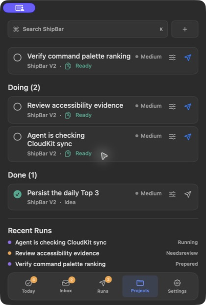

ShipBar full UI verification
Installed macOS UI · isolated V2 fixtures · 11 July 2026
2 findings
1 high · 1 medium
1 high · 1 medium
Actionable findings
HIGHWaiting badges stretch into tall icon-only pills
The shared run-state badge loses “Running” / “Needs review” and expands vertically, driving inconsistent row heights. It reproduces at 420 pt and becomes more severe at 800 pt. Constrain the badge to intrinsic size with a one-line label; add normal and wide-window visual contracts.
ShipBarStateBadge.swift · FocusTaskRowView.swiftMEDIUMProject recent-run status is not humanized
The workspace renders Needsreview instead of “Needs review”. Status display formatting is duplicated and only special-cases handedOff.
ProjectWorkspaceView.swiftPASSCore macOS flow coverage
Today, Inbox triage, capture submission, Runs, Projects, project workspace, Settings, Command-K filtering, task detail, dock shortcuts/accessibility labels, and wide-window navigation were exercised successfully.
Runtime evidence



Build boundary
- macOS: 74 tests passed
- macOS app build: passed
- iOS runtime/build: blocked because iOS 26.4 is not installed in Xcode
- QA tracker CLI: blocked by missing
csv-parsein the installed agentic-qa package; native verification continued directly